Discoveries & Insights
What is the most common type of computing device in Yolo households?
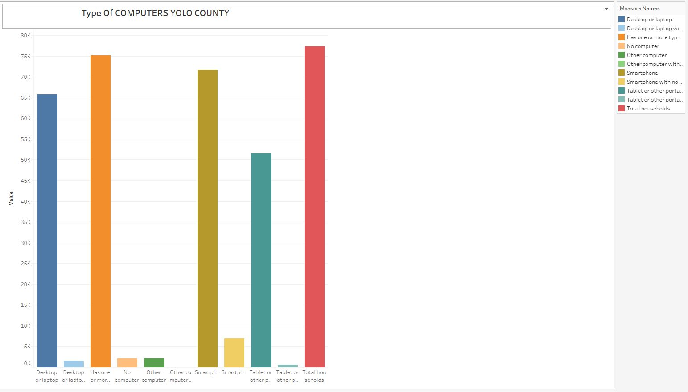
Types of computers used in Yolo County.
Quick Summary
In Yolo County group of 77,323 households were surveyed, among them 75,135
have some form of computing device. With desktop or laptop computers being the most common (65,774). Additionally, 6,940 households have tablets or other portable wireless computers,
and 2,178 households have other types of computers, while 2,188 households reported having no computers. While 75,135 households has one or more tpyes of computing devices.
How does the distribution of Internet
subscription types (dial-up, broadband, none) vary across different income groups?

HouseHold Income in the Past 12 Months (2022 Inflation-adjusted Dollars) in Yolo County.
Quick Summary
Among the 77,323 households. Among these households, 9,997 have an annual income of less than $20,000, and out of those 7,766 have no internet subscription.
While 2,231 have a broadband internet subscription, and none have dial-up internet alone. In the $20,000 to $74,999, there are 24,729 households, with 21,952 having a broadband internet subcriptions,
2,777 without any internet subscription, and none having dial-up internet alone. FOr house holds with $75,000 or more, 42,597 households do not have dial-up subscription alone, 41,621 have broadband internet subscription.
and 976 do not have any internet subscription.
What is the distribution of internet
subscription types in Yolo County?
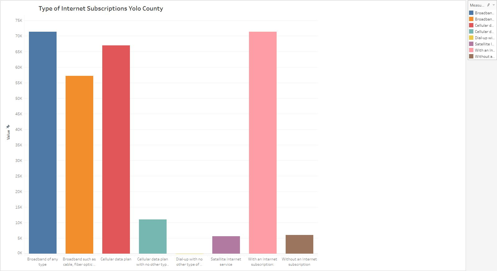
Type Of Internet Subscriptions in Yolo County.
Quick Summary
In Yolo county there are 71,339 households with an internet subscription. Out of these 66,985 households have a broadband internet subcrion, with 10,998 have cellular data plan
in addition to their broadband subscription. Additionally, 57,144 households have broadband internet through tech like, cable, fiber optic, or dsl. And 5,661 households have satellite internet service.
On the other hand, there are 5,984 households in Yolo county that do not have any intenret subscription.
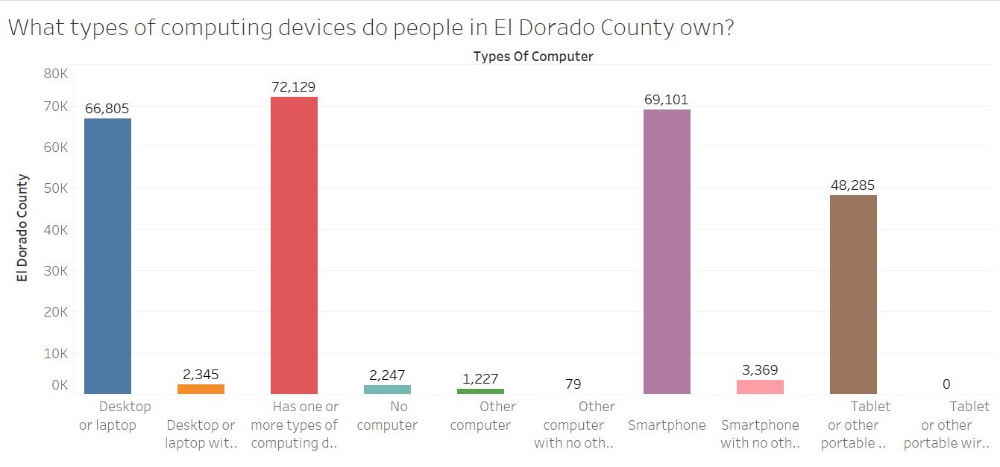
Computing devices people own in El Dorado County.
Quick Summary
72,129 people in El Dorado County own one or more types of computing devices. Those devices include desktop, laptop,
smartphone, tablet or other portable wireless computer, and other types of computers.
There are 2,247 that don't own a computer.
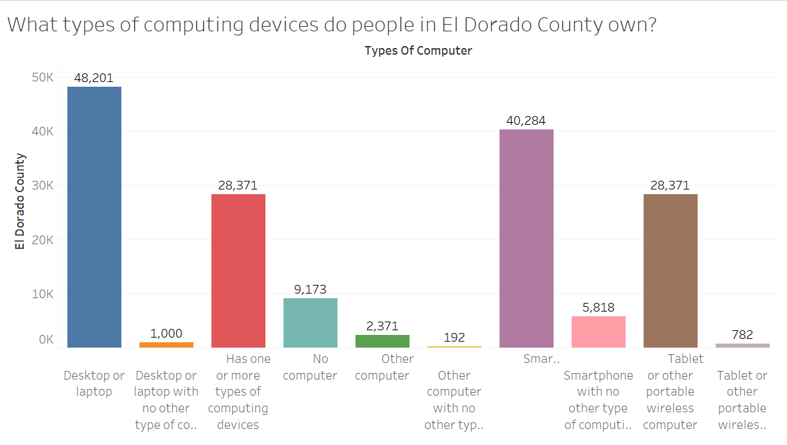
Computing devices people own in El Dorado County.
Quick Summary
28,371 people in El Dorado County own one or more types of computing devices. Those devices include desktop, laptop,
smartphone, tablet or other portable wireless computer,
and other types of computers. There are 9,173 that don't own a computer.
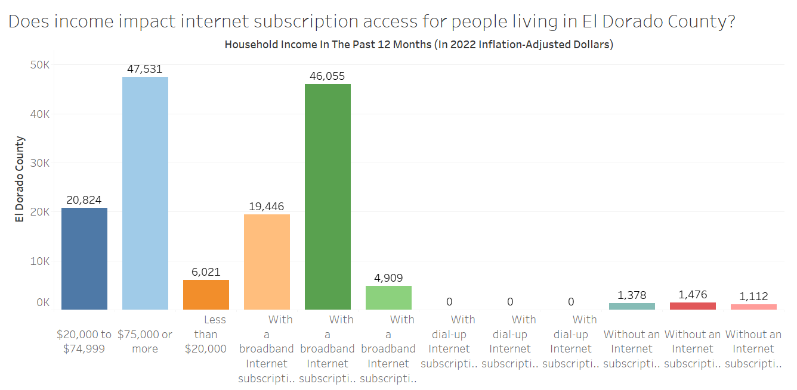
Internet Subscriptions in El Dorado County.
Quick Summary
Income does impact internet subscription access for people living in El Dorado County. The more a person makes, the more likely they are to have access to internet. For example, 46,055 people that
make $75,000 or more have internet access. On the other hand, 4,909 people
that make less than $20,00 have internet access.
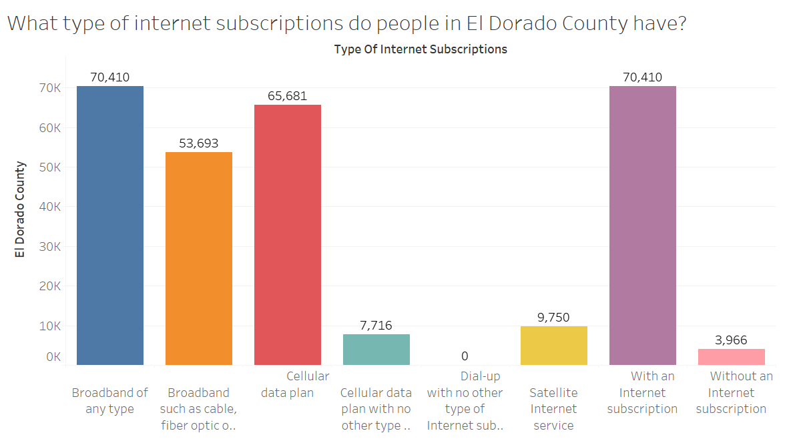
Type of Internet Subscriptions in El Dorado County.
Quick Summary
There are 70,410 people in El Dorado County that have an internet subscription. 65,681 people have a cellular data plan.
53,693 have broadband. 9,750 have satellite internet service.
There are 3,966 peop who don't have an internet subscription.
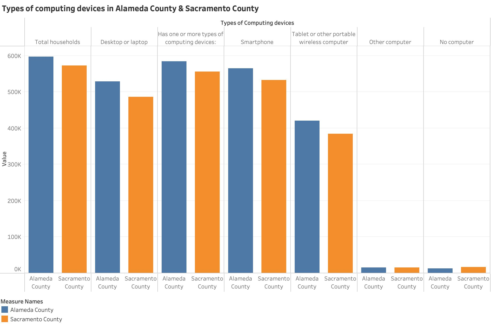
Types of Computing devices between Alameda and Sacramento County
Quick Summary
The bar graph above compares the computing devices owned by household in Alameda county and Sacramento county. Although both the county have approximately the same size, Alameda county turns out to have more household owning computing
devices than Sacramento county in all the categories.
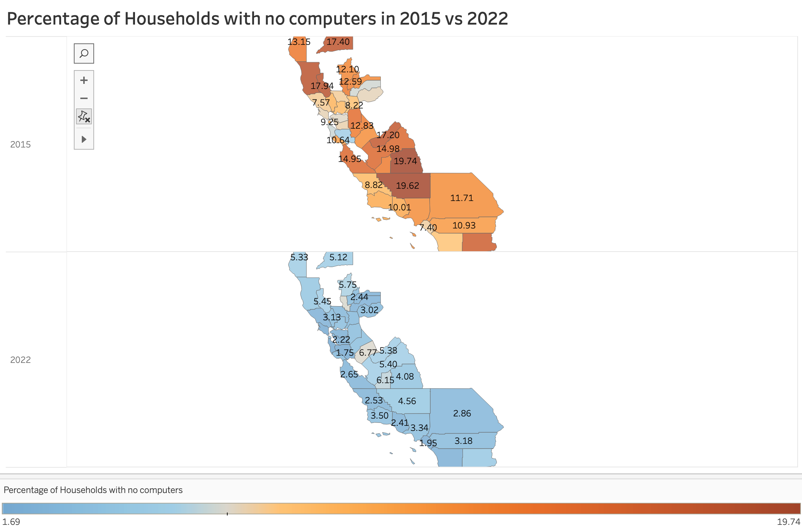
Have more households in California acquired Computers
since 2015?
Quick Summary
The map depicted above illustrates a comparison of
data regarding the percentage of households without
computers in various California counties for the years
2015 and 2022. Colors used in the visualization
represent the range of percentages, with blue
indicating the lowest percentage, red the highest,
and white serving as a midpoint. Notably, the white
gradient represents the value corresponding to the
lowest percentage of households without computers
in a 2015 county. Observing the 2022 map, it is evident
that the majority of the graph is shaded blue,
underscoring how computers have become integral
to daily life over time. As of 2022, the percentage of
households in most California counties without computers is
lower than the lowest percentage recorded in 2015.
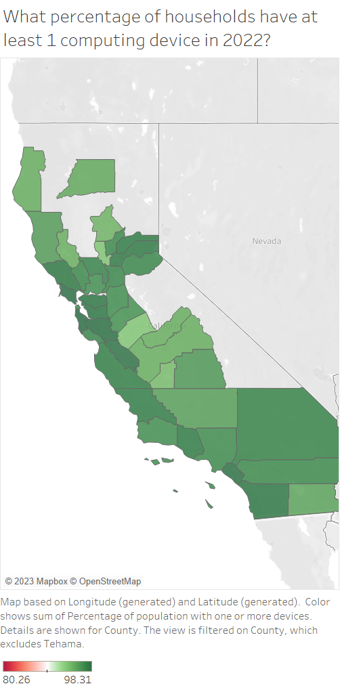
House holds in 2022 have at least 1 computing device.
Quick Summary
As we can see, the percent of households that have at least one device based on county in 2022 ranges from ~92% to ~98%
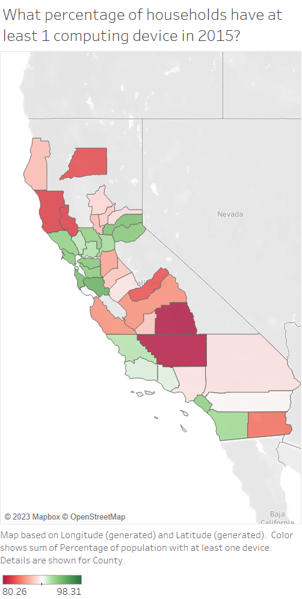
House holds in 2015 have at least 1 computing device.
Quick Summary
As we can see from these images, some counties have increase the % of total households with at least one device by as much as 15%
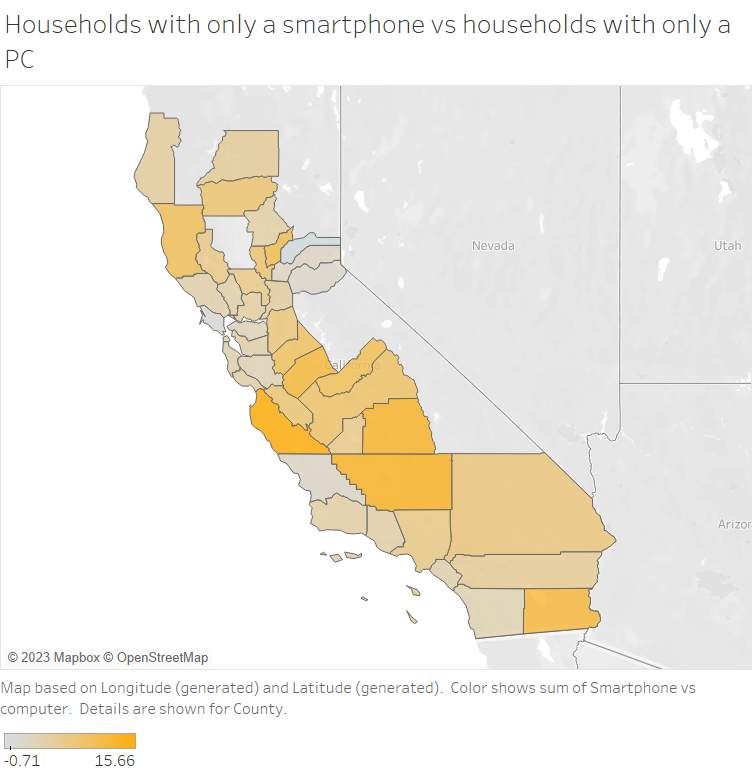
What percentage of households per county have at least one device?
Quick Summary
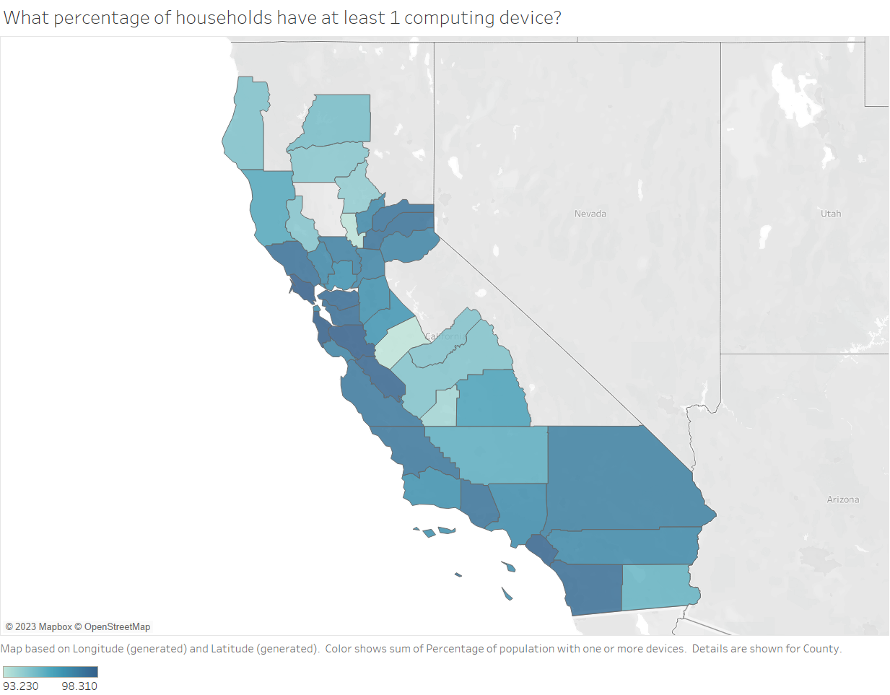
What percentage of households per county have at least one device?
The percent ranges from 93.2 to 98.3 as shown by the color scale
Quick Summary
Summary
In Yolo County, out of 77,323 surveyed households, 75,135 have computing devices, with desktops or laptops being the most common. Income
levels influenced internet access, with higher-income households more likely to have broadband subscriptions.
Meanwhile, in El Dorado County, 72,129 people own computing devices, with income also impacting internet access.
Higher-income individuals were more likely to have internet subscriptions, with options including cellular data plans,
broadband, and satellite services.
A visual comparison between Alameda and Sacramento counties showed that Alameda had higher household ownership of computing devices.
Lastly, a map comparing California counties in 2015 and 2022 revealed a significant increase in computer ownership
over time, with most counties having lower percentages of households without computers in 2022 compared to 2015.
In summary, these findings highlight the increasing importance of computing devices and internet access, with
income playing a role in access disparities. There is a clear trend towards increased technology adoption across California counties over the years.